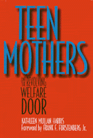

A comprehensive study of teen mothers and their patterns of entering and leaving the welfare system
A comprehensive study of teen mothers and their patterns of entering and leaving the welfare system


 A comprehensive study of teen mothers and their patterns of entering and leaving the welfare system
A comprehensive study of teen mothers and their patterns of entering and leaving the welfare system

|  |
Teen Mothers and the Revolving Welfare DoorKathleen Mullan Harris, foreword by Frank F. Furstenberg, Jr.cloth EAN: 978-1-56639-499-4 (ISBN: 1-56639-499-6) |
Outstanding Academic Title, Choice, 1997
The association between teen childbearing and poverty is unmistakable. Women who grow up in poor families begin childbearing at a younger age than nonpoor women, attain less education, work less, earn less, are more dependent on federal aid, have less support from a husband, have more children, and spend more time as single mothers.
Kathleen Mullan Harris reveals the relationship between Black teenage mothers and the welfare system. Does welfare encourage them to maintain a life of dependency? How do education, marriage, and employment impact this relationship? How do these women escape dependency?
Harris's account is based on Frank Furstenberg's Baltimore study, which began in the sixties and has continued for more than twenty years. This study traces the paths of these mothers, but also provides commentary on the changes in the welfare system and the way society perceives welfare recipients. Not only are job prospects worse today but so are welfare benefits, and the abortion rate has risen drastically.
Teen Mothers and the Revolving Welfare Door details many misconceptions about the best options for Black pregnant teenagers. For instance, marrying the father is not a beneficial option--this typically cuts off the mother from further education and early job experience and doesn't protect her from early divorce. The author concludes that education offers some opportunity for teenage mothers to escape welfare dependency, but housing assistance, child-care, and good health insurance would provide opportunity for more drastic long-term improvement. This comprehensive study provides insight into the welfare system, a system that remains a symbol of race, class, and gender divisions, and offers progressive solutions for change in welfare as we know it.
"Mullan Harris's research is pivotal particularly because it discredits stereotypic representations of teenage mothers."
—Gender & Society
Foreword
Preface and Acknowledgments
1. Adolescent Mothers and Poverty
2. Data and Methods
3. Patterns of Welfare Receipt
4. Welfare Entry
5. Routes of Welfare Exit
6. Welfare Return
7. Work and Welfare
8. Implications for Welfare Policy
Appendix A: Reliability of Data
Appendix B: Methods of Analysis
Notes
Bibliography
Index
Kathleen Mullan Harris is Assistant Professor of Sociology at the University of North Carolina, Chapel Hill.
Women in the Political Economy, edited by Ronnie J. Steinberg.
No longer active.
Women in the Political Economy, edited by Ronnie J. Steinberg, includes books on women and issues of work, family, social movements, politics, feminism, and empowerment. It emphasizes women's roles in society and the social construction of gender and also explores current policy issues like comparable worth, international development, job training, and parental leave.
© 2015 Temple University. All Rights Reserved. This page: http://www.temple.edu/tempress/titles/680_reg.html.